FLODE shows Home Assistant automations and scripts as a flow you can read, test and understand — edited with Home Assistant's own editors, saved as plain Home Assistant YAML. No server, no lock-in.
FLODE zeigt Home-Assistant-Automationen und -Skripte als Ablauf, den du lesen, testen und verstehen kannst. Bearbeitet mit den Editoren von Home Assistant, gespeichert als ganz normales Home-Assistant-YAML. Kein Server, keine Abhängigkeit.
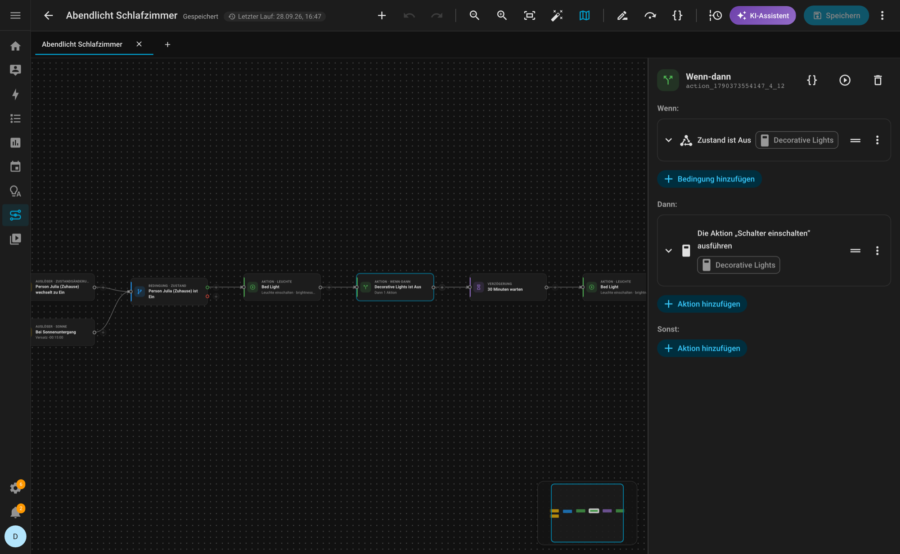
Made of Home AssistantAus Home Assistant gebaut
Every trigger, condition and action opens in Home Assistant's own editor — the same forms, pickers and dialogs as in Settings. FLODE adds the canvas, so you see how it all connects.
Jeder Auslöser, jede Bedingung und jede Aktion öffnet sich im Editor von Home Assistant, mit denselben Formularen, Auswahlfeldern und Dialogen wie unter Einstellungen. FLODE ergänzt die Arbeitsfläche, damit du siehst, wie alles zusammenhängt.
Adding steps, renaming, area, labels, mode, saving — all Home Assistant's own. If-then, Choose and Repeat stay single blocks.
Schritte hinzufügen, umbenennen, Bereich, Labels, Modus, speichern: alles von Home Assistant selbst. Wenn-dann, Auswählen und Wiederholen bleiben einzelne Blöcke.
FLODE follows your Home Assistant profile, light or dark, on desktop and phone.
FLODE folgt deinem Home-Assistant-Profil, hell oder dunkel, am Rechner und auf dem Handy.
Open any existing automation, change it visually, save it back. It stays editable in Home Assistant's own editor.
Öffne eine beliebige vorhandene Automation, ändere sie grafisch und speichere sie zurück. Sie bleibt im Editor von Home Assistant bearbeitbar.
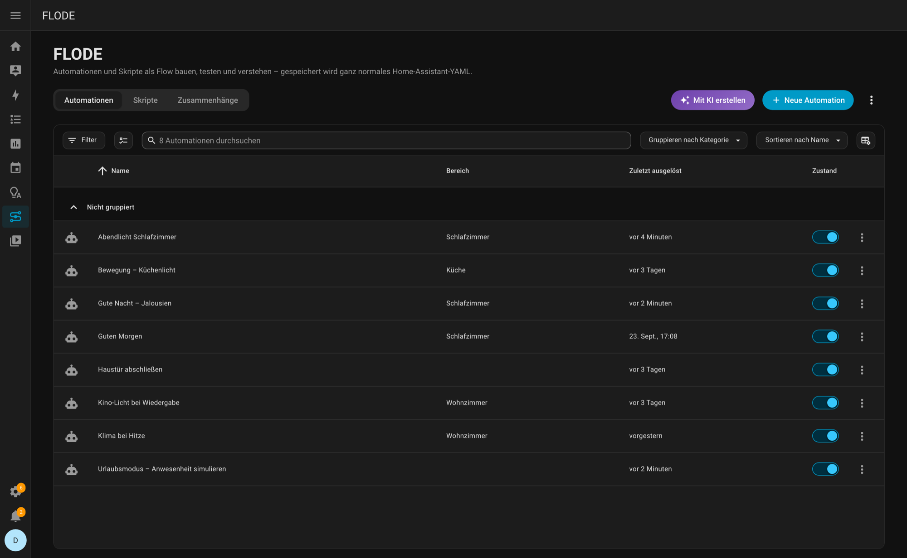
Runs & relationsAusführungen & Zusammenhänge
Real runs are drawn right onto the flow, next to Home Assistant's own timeline. And one view shows how all your automations and scripts affect each other.
Echte Ausführungen werden direkt in den Ablauf gezeichnet, neben der Zeitleiste von Home Assistant. Und eine Ansicht zeigt, wie sich all deine Automationen und Skripte gegenseitig beeinflussen.
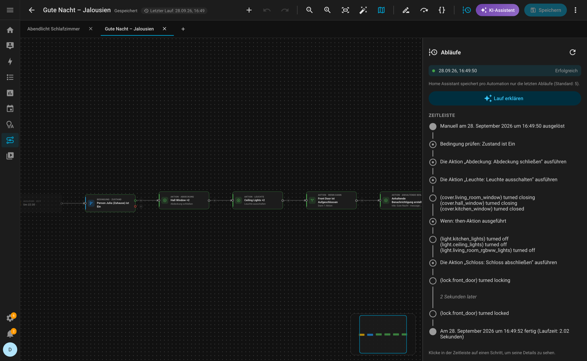
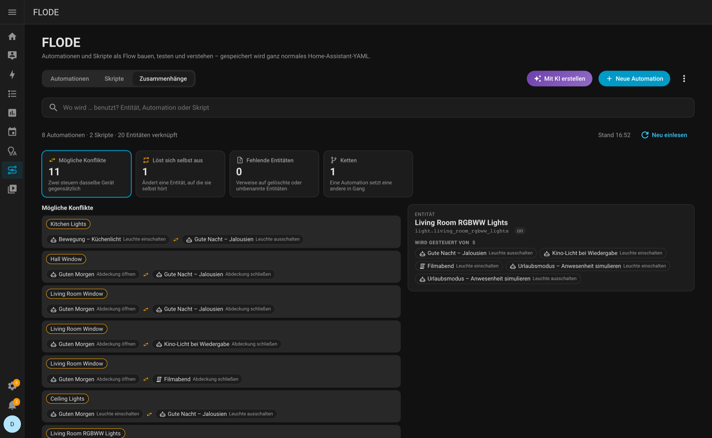
AI helpKI-Hilfe
FLODE can use the AI you've set up in Home Assistant to explain runs, find mistakes and draft new automations.
FLODE kann die KI nutzen, die du in Home Assistant eingerichtet hast, um Ausführungen zu erklären, Fehler zu finden und neue Automationen zu entwerfen.
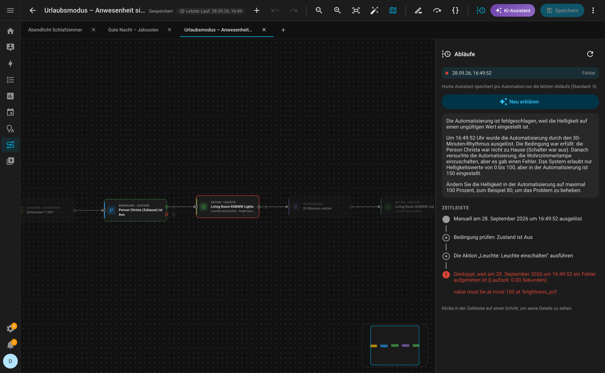
One click on a run and the AI explains it in plain words — which condition held, which step broke and how to fix it.
Ein Klick auf eine Ausführung und die KI erklärt sie in einfachen Worten: welche Bedingung erfüllt war, welcher Schritt fehlschlug und wie du es behebst.
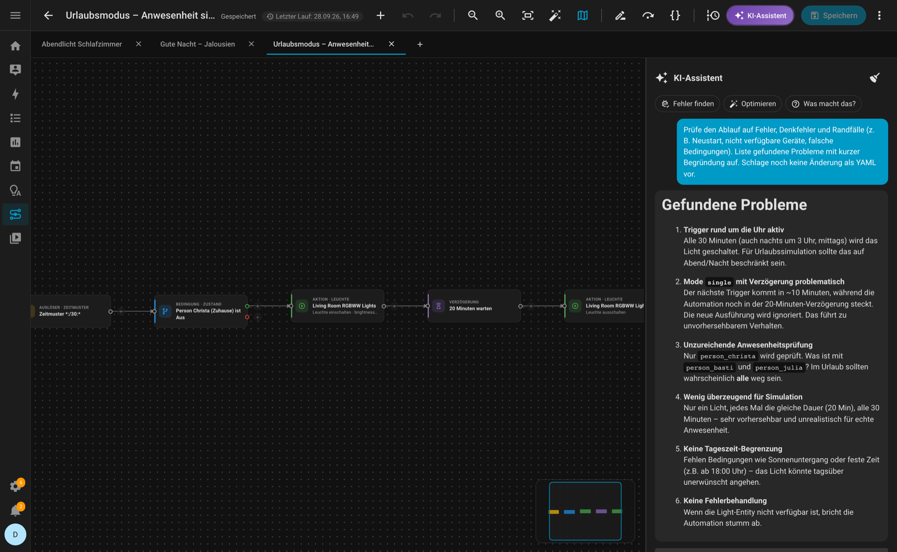
Ask about the open flow, let it find mistakes or suggest a better version. Changes are shown first and applied as one step you can undo.
Stell Fragen zum offenen Ablauf, lass Fehler suchen oder eine bessere Fassung vorschlagen. Änderungen siehst du zuerst, übernommen werden sie als ein Schritt, den du rückgängig machen kannst.
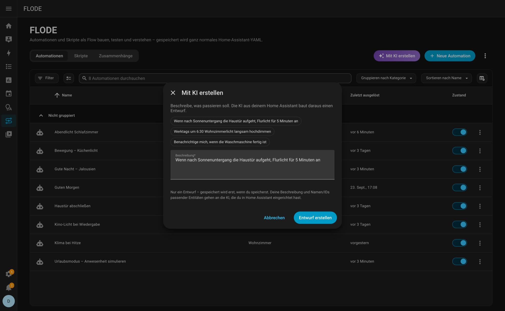
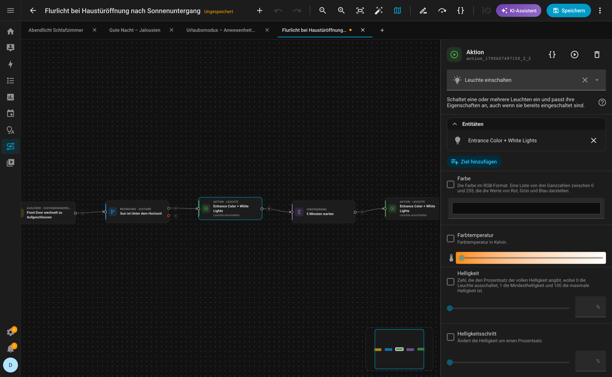
Describe what should happen. FLODE builds a draft from your real entities, checks it — and nothing is saved until you save.
Beschreib, was passieren soll. FLODE baut einen Entwurf aus deinen echten Entitäten und prüft ihn. Gespeichert wird erst, wenn du speicherst.
Everything elseAlles andere
With fields, a run button that asks for them, and Run from here for any step.
Mit Feldern, einem Ausführen-Knopf, der danach fragt, und Ab hier ausführen für jeden Schritt.
Jinja rendered live by Home Assistant — with the result type, what it reacts to and the variables of a real run. ⌘J
Jinja, live von Home Assistant gerendert. Mit Ergebnistyp, worauf es reagiert, und den Variablen einer echten Ausführung. ⌘J
Everything in one search ⌘K, right-click menus, copy, paste, duplicate, and an overview on ?.
Alles in einer Suche ⌘K, Rechtsklick-Menüs, kopieren, einfügen, duplizieren und eine Übersicht unter ?.
Several flows open at once, each with its own undo; a minimap for big ones; tidy up in one click.
Mehrere Abläufe gleichzeitig offen, jeder mit eigenem Rückgängig. Eine Minikarte für große Abläufe, aufräumen mit einem Klick.
Paste YAML, save as copy, FLODE files, and merge several automations into one.
YAML einfügen, als Kopie speichern, FLODE-Dateien und mehrere Automationen zu einer zusammenführen.
Warns when it can't read part of an automation. HA blocks stay blocks, and saving keeps what Home Assistant wrote.
Warnt, wenn ein Teil einer Automation nicht lesbar ist. HA-Blöcke bleiben Blöcke, und beim Speichern bleibt erhalten, was Home Assistant geschrieben hat.
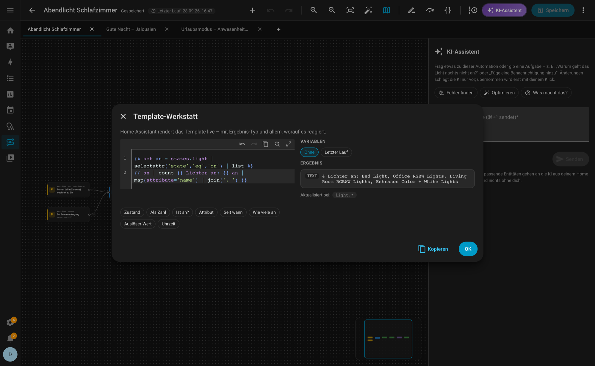
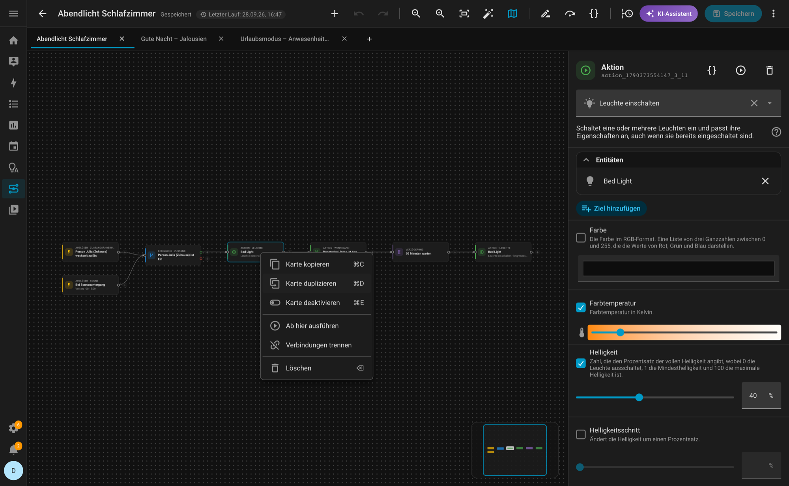
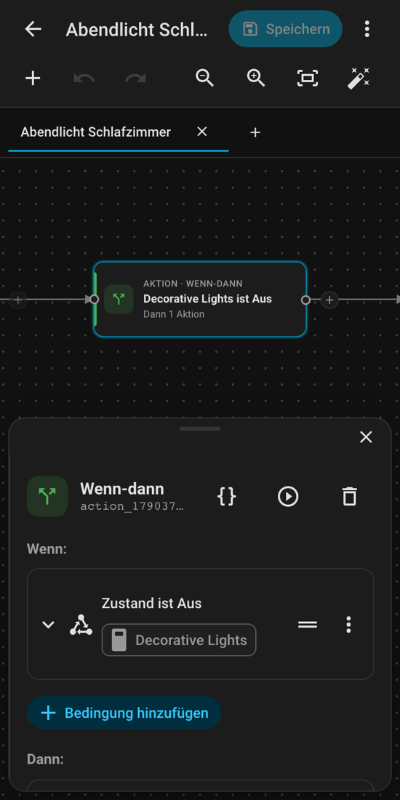
On the goUnterwegs
On a phone the tools move into a swipeable strip and the editor slides up as a sheet — the card you're editing stays in view above it.
Auf dem Handy wandern die Werkzeuge in eine wischbare Leiste und der Editor gleitet als Blatt von unten herein. Die Karte, die du bearbeitest, bleibt darüber sichtbar.
Under the hoodUnter der Haube
What you build is ordinary Home Assistant YAML, stored by Home Assistant. Uninstall FLODE tomorrow and every automation keeps working.
Was du baust, ist ganz normales Home-Assistant-YAML, gespeichert von Home Assistant. Deinstallierst du FLODE morgen, läuft jede Automation weiter.
alias: Abendlicht Schlafzimmer triggers: - trigger: sun event: sunset offset: "-00:15:00" conditions: - condition: state entity_id: input_boolean.person_julia state: "on" actions: - action: light.turn_on target: entity_id: light.bed_light data: brightness_pct: 40 - if: - condition: state entity_id: switch.decorative_lights state: "off" then: - action: switch.turn_on target: entity_id: switch.decorative_lights mode: restart
InstallInstallieren
Needs Home Assistant 2026.3 or newer and an admin account. By hand: unzip flode.zip from the releases into config/custom_components/flode/.
Braucht Home Assistant 2026.3 oder neuer und ein Admin-Konto. Von Hand: flode.zip aus den Releases nach config/custom_components/flode/ entpacken.